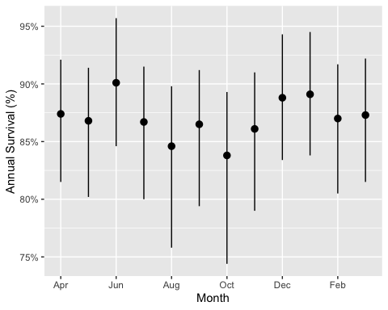
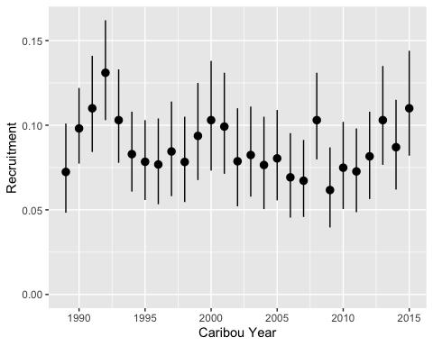

bboutools is an R package to estimate the annual survival, recruitment and population growth for boreal caribou using Bayesian models to facilitate direct comparison of estimates across jurisdictions.
Installation
To install the latest development version:
# install.packages("pak")
pak::pak("poissonconsulting/bboutools")Introduction
Survival
bboutools accepts survival data for a single population in a specific format.
library(tibble) # for printing data frames
library(ggplot2) # for plotting
library(bboudata) # for boreal caribou datasets
library(bboutools)
surv_data <- bboudata::bbousurv_a
head(surv_data)
#> # A tibble: 6 × 6
#> PopulationName Year Month StartTotal MortalitiesCertain MortalitiesUncertain
#> <chr> <int> <int> <int> <int> <int>
#> 1 A 1986 1 0 0 0
#> 2 A 1986 2 8 0 0
#> 3 A 1986 3 8 0 0
#> 4 A 1986 4 8 0 0
#> 5 A 1986 5 8 0 0
#> 6 A 1986 6 8 0 0The survival model, which includes a random effect of month, is fitted using bb_fit_survival(). To achieve convergence increase nthin.
set.seed(99)
surv_fit <- bb_fit_survival(surv_data, nthin = 1, quiet = TRUE)
glance(surv_fit)
#> # A tibble: 1 × 8
#> n K nchains niters nthin ess rhat converged
#> <int> <int> <int> <int> <dbl> <int> <dbl> <lgl>
#> 1 363 5 3 1000 1 39 1.90 FALSEPredictions can then be generated using bb_predict_survival().
surv_pred <- bb_predict_survival(surv_fit)
surv_pred
#> # A tibble: 32 × 6
#> PopulationName CaribouYear Month estimate lower upper
#> <chr> <int> <int> <dbl> <dbl> <dbl>
#> 1 A 1985 NA 0.866 0.763 0.931
#> 2 A 1986 NA 0.872 0.802 0.941
#> 3 A 1987 NA 0.851 0.684 0.904
#> 4 A 1988 NA 0.875 0.816 0.944
#> 5 A 1989 NA 0.867 0.785 0.927
#> 6 A 1990 NA 0.868 0.798 0.93
#> 7 A 1991 NA 0.87 0.816 0.93
#> 8 A 1992 NA 0.879 0.824 0.941
#> 9 A 1993 NA 0.867 0.803 0.919
#> 10 A 1994 NA 0.853 0.765 0.899
#> # ℹ 22 more rowsAnd plotted using bb_plot_year()
bb_plot_year_survival(surv_pred) +
expand_limits(y = c(0, 1))
The survival in each month can be plotted using bb_plot_month()
bb_plot_month_survival(surv_fit)
Recruitment
The equivalent functions for recruitment data are
recruit_data <- bboudata::bbourecruit_a
head(recruit_data)
#> # A tibble: 6 × 9
#> PopulationName Year Month Day Cows Bulls UnknownAdults Yearlings Calves
#> <chr> <int> <int> <int> <int> <int> <int> <int> <int>
#> 1 A 1990 3 9 1 1 0 0 0
#> 2 A 1990 3 9 5 1 0 0 0
#> 3 A 1990 3 9 4 1 0 0 0
#> 4 A 1990 3 9 2 0 0 0 0
#> 5 A 1990 3 9 6 0 0 0 0
#> 6 A 1990 3 9 4 1 0 0 0
set.seed(99)
recruit_fit <- bb_fit_recruitment(recruit_data, nthin = 1, quiet = TRUE)
bb_plot_year_recruitment(recruit_fit)
Population Growth
The function bb_predict_growth() predicts the annual population growth (lambda) rate from the survival and recruitment models.
lambda <- bb_predict_growth(surv_fit, recruit_fit)
bb_plot_year_growth(lambda)
Information
Additional information is available from the bboutools website.
There is also a user-friendly graphical interface, called bboushiny, for non-R users.
Code of Conduct
Please note that the bboutools project is released with a Contributor Code of Conduct. By contributing to this project, you agree to abide by its terms.
License
The code is released under the Apache License 2.0
Copyright 2022 Environment and Climate Change Canada
Licensed under the Apache License, Version 2.0 (the “License”); you may not use this file except in compliance with the License. You may obtain a copy of the License at
https://www.apache.org/licenses/LICENSE-2.0
Unless required by applicable law or agreed to in writing, software distributed under the License is distributed on an “AS IS” BASIS, WITHOUT WARRANTIES OR CONDITIONS OF ANY KIND, either express or implied. See the License for the specific language governing permissions and limitations under the License.